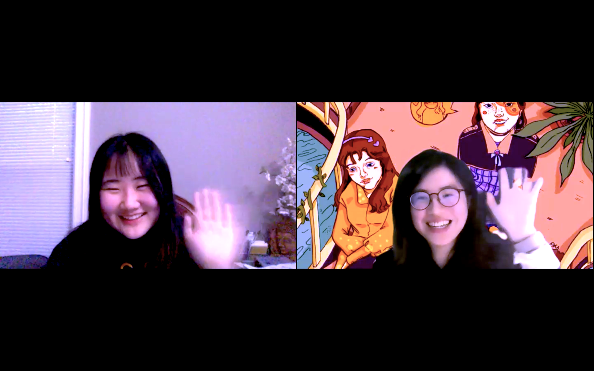

Haven't
seen you
for a long time!

Caitlin: Well, I’m at illustration major, so at least I get to stay home and draw. So that’s a plus side. But I
miss my peers physically.
Serena: How is your life so far for this semester?
Caitlin: Hi, Serena! OK, sure. My name’s Caitlin Du. I am from Beijing, China, and I’m currently studying
illustration at Parsons School of Design.
Serena: Hi, Caitlin! Let us start by introducing yourself to our audience.
Caitlin: The words to describe me. OK, let me think for a second. I am energetic. I’m very energetic. I’m
pretty emotional because, yeah, I’m overly emotional. Therefore, I can I love to express myself too. And last
but not least, I’m very determined. I’m not sure about the energetic part, I’m energetic if I get 10 hours of
sleep.
Caitlin: The words to describe me. OK, let me think for a second. I am energetic. I’m very energetic. I’m
pretty emotional because, yeah, I’m overly emotional. Therefore, I can I love to express myself too. And last
but not least, I’m very determined. I’m not sure about the energetic part, I’m energetic if I get 10 hours of
sleep.
Serena: Right. Because I’ve known you for two years, I find you have a very unique and interesting personality.
If you want to use three words to describe yourself. What would you say?
Serena: I totally agree and, I will add one comment that you are one of my best friends. You get me a lot of
support